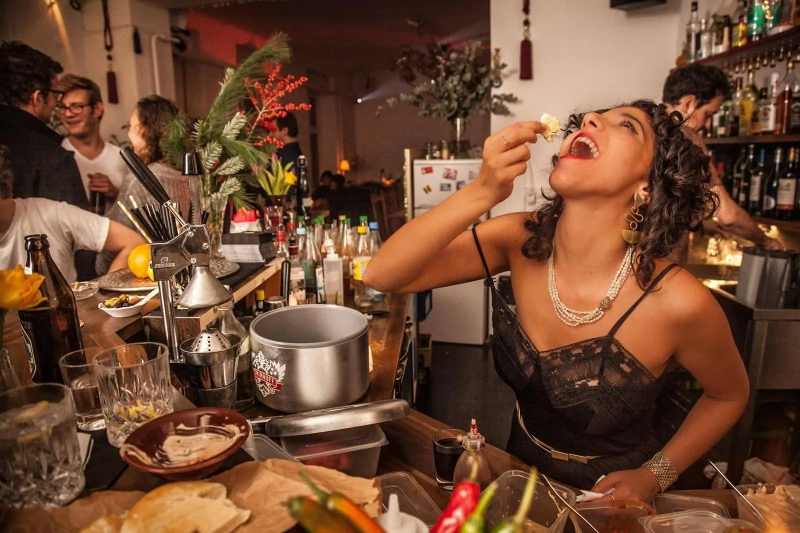
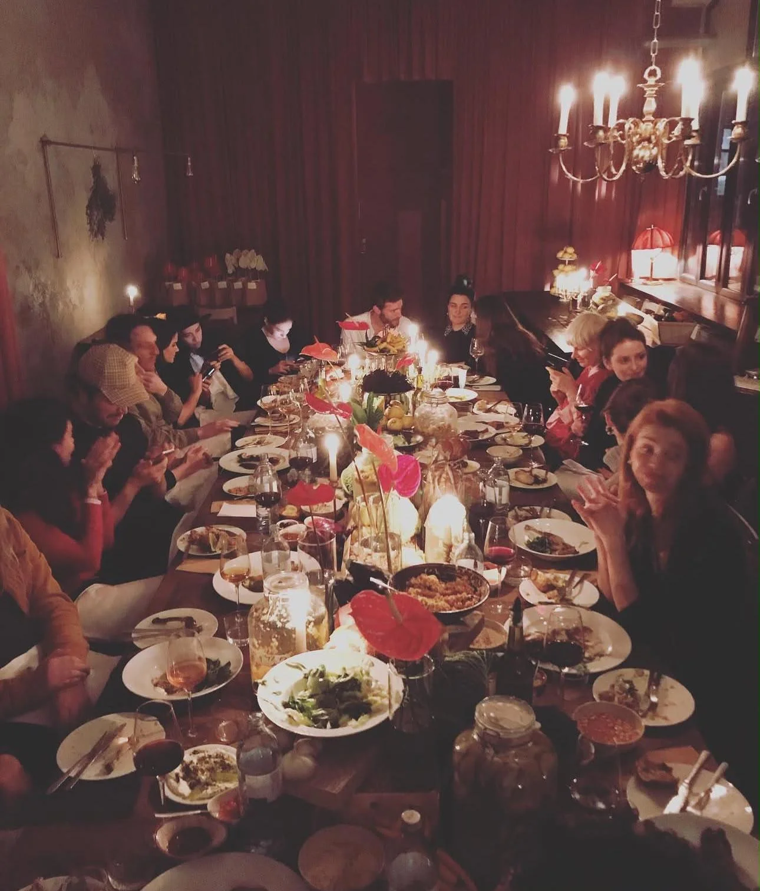

הקמת עסק חדש
מהרעיון ועד יום הפתיחה.
- תוכנית עסקית ותכנון
- קונספט ומיתוג
- סטנדרטים תפעוליים

התחלתי את דרכי בשירות ובבר בתל אביב, ומשם עברתי לניהול אירועים. בברלין הקמתי את Yafo, מסעדה ובר עם אירועים שבועיים, ואחריה את Shishi, מסעדת שף שעבדה ישירות מול חקלאים.
בהמשך עבדתי עם מלונות: במלון Amano הפכנו את הלובי למסעדה של ממש, וב־Selina ברלין הובלתי את כל מערך המזון והמשקאות, לפי יעדים מדידים ובמודל שותפות.
כל מה שאני מציעה ללקוחות עשיתי קודם בעצמי, כבעלים וכמנהלת. היום אני מלווה בעלי מסעדות, יזמים ומלונות שרוצים עסק שעובד, וגם מרוויח.
תואר ראשון בתקשורת ובמנהל עסקים · אזרחות ישראלית וגרמנית · עברית, אנגלית וגרמנית
אפשר לבחור מסלול אחד או לשלב כמה, לפי השלב שבו העסק נמצא.
מהרעיון ועד יום הפתיחה.
כשהמספרים לא מסתדרים, אני עוזרת להחזיר את השליטה.
למסעדה או למלון שרוצים לצמוח.
הפקה והובלה של אירועים פרטיים ועסקיים.
מסעדות שהקמתי וניהלתי, ומלונות שאיתם עבדתי על מערך המזון והמשקאות.

הקמתי וניהלתי מסעדה ובר עם אירועים שבועיים, שנעשתה לכתובת מוכרת של אירוח ישראלי בעיר.
הובלתי את כל מערך המזון והמשקאות במלון, לפי יעדים מדידים ובמודל שותפות.
הפכנו את לובי המלון למסעדה של ממש, ופיתחנו בתוכו את המותג.
ברוח ״מהחווה לשולחן״, עם חומרי גלם ישירות מחקלאים בברנדנבורג.
אני לומדת איפה העסק נמצא ומה היעד.
אני בוחנת את התפעול, המספרים, הצוות והמותג.
אני בונה סדרי עדיפויות ברורים, עם יעדים ולוחות זמנים.
אני עובדת לצדכם בשטח, עד שהשינוי מחזיק.
מחשבות על מסעדות ומלונות, מתוך העבודה בברלין.
ספרו לי בכמה משפטים איפה העסק נמצא ומה אתם צריכים, ואחזור אליכם תוך 24 שעות.